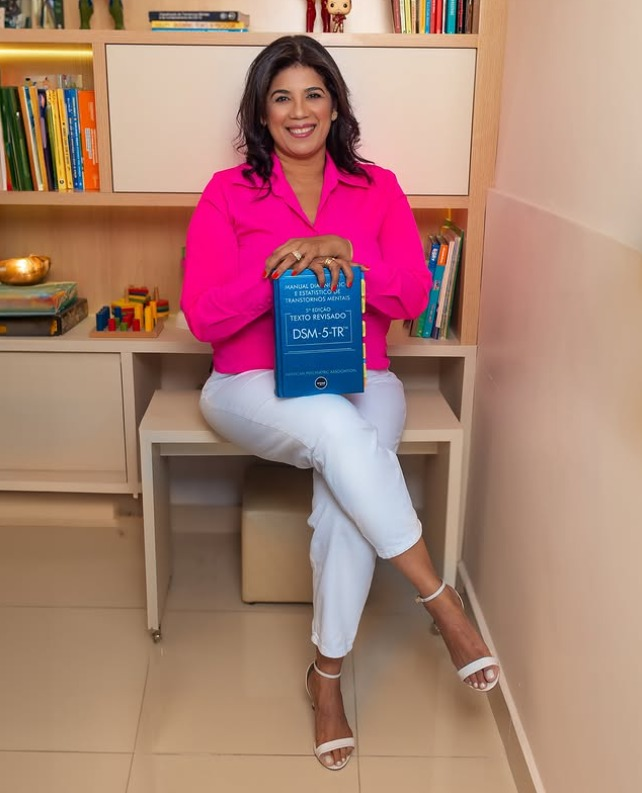
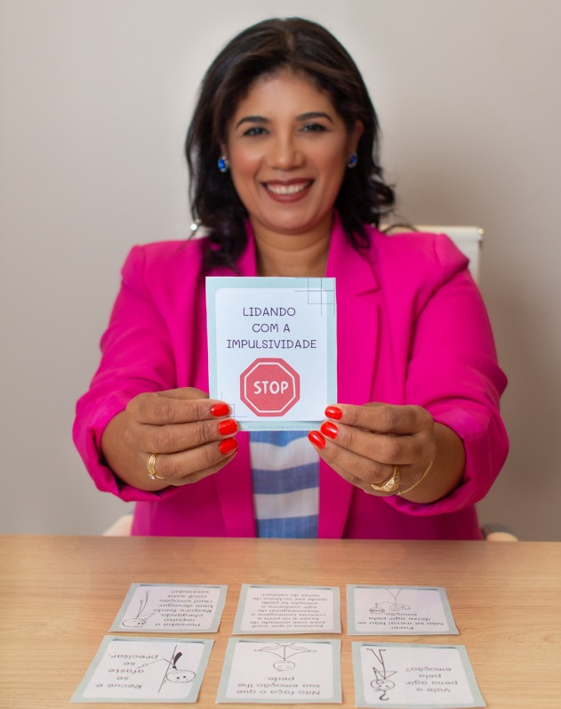

Acolhimento, avaliação neuropsicológica e psicoterapia para crianças, adolescentes, adultos e suas famílias — com escuta, ética e base científica.
Acreditamos que cada pessoa tem uma história única — e merece ser compreendida em sua singularidade, potencialidades e desafios.
Um espaço dedicado ao acolhimento, à promoção da saúde mental e ao desenvolvimento humano, com atendimento especializado, ético e humanizado.

Atuo na avaliação e no acompanhamento psicológico de crianças, adolescentes e adultos. Minha prática é fundamentada em evidências científicas, buscando um atendimento acolhedor, ético e individualizado — dedicada à compreensão do desenvolvimento humano, do comportamento e do funcionamento cognitivo.
{{ a.desc }}
{{ e.desc }}
Um programa para adolescentes e jovens com TEA nível 1 de suporte e TDAH, focado em habilidades sociais, comunicação, autonomia e no fortalecimento das relações interpessoais — em um ambiente estruturado, acolhedor e seguro.
Nosso diferencial é a participação conjunta de jovens neuroatípicos e neurotípicos, promovendo convivência, inclusão, empatia e pertencimento.
Um processo especializado que investiga aspectos cognitivos, emocionais e comportamentais para compreender o funcionamento global do indivíduo.
{{ p.desc }}
Materiais lúdicos, instrumentos validados e atualização constante — cada recurso a serviço de um cuidado individualizado.

“Cada história merece ser acolhida com respeito, escuta e conhecimento.”
{{ d }}
{{ f.a }}
Agende uma conversa e dê o primeiro passo para um acompanhamento acolhedor e especializado.
Falar no WhatsApp